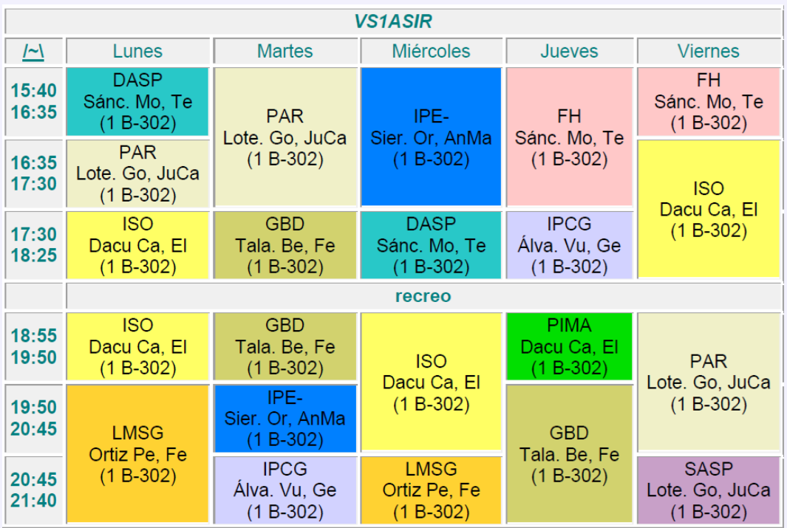
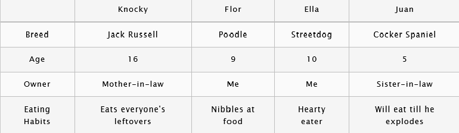
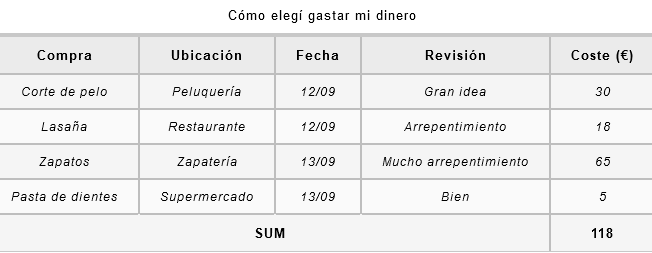

Conceptos básicos de las tablas HTML
¿Que es una tabla?
Una tabla es un conjunto estructurado de datos distribuidos en filas y columnas (datos tabulados). Permite buscar con rapidez y facilidad valores entre diferentes tipos de datos que indiquen algún tipo de conexión. Por ejemplo, en la siguiente tabla, que representa vuestro horario, la intersección entre la fila que representa la hora y la columna que reperesenta el día de la semana, nos informa de la clase que tienes en esa franja horaria.

En la construcción de una tabla HTML, es importante que ésta tenga una sólida estructura HTML, a la que habrá que añadir información de estilo mediante CSS para que la presentación sea más legible y atractiva. La presentación por defecto de una tabla HTML es muy pobre.
¿Para que no se debe usar una tabla?
Las tablas HTML están pensadas para utilizarse con datos tabulados. Por desgracia, mucha gente utiliza las tablas HTML para confeccionar la estructura de las páginas web. Por ejemplo, una fila para contener la cabecera, una fila para contener las columnas de contenido, una fila para contener el pie de página, etc. Las razones por las que no se debe usar una tabla como elemento de diseño de la estructura d la página son:
- Las tablas de diseño reducen la accesibilidad para los usuarios con discapacidad visual: Los lectores de pantalla que utilizan las personas con visibilidad reducida interpretan las etiquetas de una página HTML y leen su contenido para el usuario.
- Las tablas generan estructuras incorrectas: Los diseños de tabla suelen involucrar estructuras de marcado más complejas que las técnicas de diseño. Esto puede dificultar la escritura, el mantenimiento y la depuración del código.
- Las tablas no tienen respuesta adaptativa automática: Cuando usas contenedores de diseño adecuados (tales como <header> <section> <article> o <div>), su ancho predeterminado es el 100% de su elemento padre. En cambio, las tablas se dimensionan de forma predeterminada según su contenido, por lo que se necesitan medidas adicionales para que el diseño de la tabla funcione de manera efectiva en todos los dispositivos.
Creación de una tabla
El siguiente código html permite crear una tabla básica:
<table>
<tr>
<td>Compañía</td>
<td>Contacto</td>
<td>Germany</td>
</tr>
<tr>
<td>Alfreds Futterkiste</td>
<td>Maria Anders</td>
<td>País</td>
</tr>
<tr>
<td>Centro comercial Moctezuma</td>
<td>Francisco Chang</td>
<td>Méjico</td>
</tr>
</table>
El contenido de la tabla viene delimitado por las etiquetas <table> y </table>
El contenedor más pequeño dentro de una tabla es la celda. El contenido de una celda viene delimitado por las etiquetas: <td> y </td>
Las celdas las agrupamos en filas. Cada fila viene deliitada por las etiquetas: <tr> y </tr>
Si no usamos nada de CSS el aspecto de nuestra tabla es muy pobre. De hecho no se parece a la imagen que todos tenemos de una tabla, en la que las celdas están delimitadas por un borde.
Vamos a darle un poco de estilo para que tome un aspecto más acorde con la idea que todos
tenemos de
tabla. Descarga para ello la siguiente hoja de estilos:
minimal-table.css
Copiala en tu carpeta css, enlázala en esta página y observa el resultado.
| Compañia | Contacto | Pais |
| Alfreds Futterkiste | Maria Anders | Germany |
| Centro comercial Moctezuma | Francisco Chang | Mexico |
Añadir encabezados con elementos th
Abre el archivo dogs-table.html
y copia el código necesario para crear la tabla con la información de unos perros como la que
muestra la siguente figura.

Si sustituyes las etiquetas <td> de la primera fila y columna por la etiqueta <th>(table header) la tabla tomará este aspecto.
| Knocky | Flor | Ella | Juan | |
|---|---|---|---|---|
| Breed | Jack Russell | Poodle | Streetdog | Cocker Spaniel |
| Age | 16 | 9 | 10 | 5 |
| Owner | Mother-in-law | Me | Me | Sister-in-law |
| Eating Habits | Eats everyone's leftovers | Nibbles at food | Hearty eater | Will eat till he explodes |
El navegador por defecto muestra en negrita los encabezados de fila y columna y mediante la hoja
de
estilos se le ha dado un color de fondo que resalta sobre las otras celdas.
th {
background-color: rgb(235,235,235);
}
Celdas que abarcan varias filas y columnas
A veces queremos que las celdas abarquen varias filas o columnas. Por ejemplo en vuestra tabla horario, la primera fila (en la que aparece el nombre del grupo) está formada por una celda que abarca todas las columnas de una fila. Puedes conseguir ese comportamiento definiendo esa celda así:
<th colspan="6"> VS1ASIR </th>
Si quieres que una celda abarque varias filas como por ejemplo para visualizar que el lunes las dos primeras clases que tenéis son del módulo de Gestión de Base de Datos, usaríamos el atributo rowspan indicando el número de filas que queremos que ocupe la celda.
<td rowspan="2">PAR<br/> Sánc. deRoNo, <br/>Pa <br/>B-302</td>
Ejercicio Práctico
Crea el horario del grupo VS1ASIR usando una tabla HTML en la que se haga uso del agrupamiento de filas y columnas para obtener el mismo aspecto que el de la figura del apartado "¿Qué es una tabla?". Para simplificar en este momento la parte los estilos a aplicar, usaremos la hoja de estilos por defecto que nos proporciona el tutorial de Mozilla Developer Network a través de GitHub. (https://github.com/mdn/learning-area/blob/master/html/tables/basic/minimal-table.css). El resultado debería ser como éste:
| VS1ASIR | |||||
|---|---|---|---|---|---|
| /-\ | Lunes | Martes | Miercoles | Jueves | Viernes |
| 15:40 16:35 |
DASP Sánc. Mo, Te (B-302) |
PAR Lote. Go, JuCa (B-302) |
IPE Sier. Or, AnMa (B-302) |
FH Gómez Mo, Ro (B-302) |
FH Gómez Mo, Ro (B-302) |
| 16:35 17:30 |
PAR Lote. Go, JuCa (B-302) |
ISO Dacu Ca, El (B-302) |
|||
| 17:30 18:25 |
ISO Dacu Ca, El (B-302) |
GBD Tala. Be, Fe (B-302) |
DASP Sánc. Mo, Te (B-302) |
INGLES Alva Vu, Ge (B-302) |
|
| Recreo | |||||
| 18:55 19:50 |
ISO Dacu Ca, El (B-302) |
GBD Tala. Be, Fe (B-302) |
ISO Dacu Ca, El (B-302) |
PIMA Dacu Ca, El (B-302) |
PAR Lote. Go, JuCa (B-302) |
| 19:50 20:45 |
LMSG Ortiz Pe, Fe (B-302) |
IPE Sier. Or, AnMa (B-302) |
GBD Tala. Be, Fe (B-302) |
||
| 20:45 21:40 |
INGLES Alva Vu, Ge (B-302) |
LMSG Ortiz Pe, Fe (B-302) |
SASP Lote. Go, JuCa (B-302) |
||
La misma tabla cambiando la hoja de estilos, la podríamos con una mejor presentación.
| VS1ASIR | |||||
|---|---|---|---|---|---|
| /-\ | Lunes | Martes | Miercoles | Jueves | Viernes |
| 15:40 16:35 |
DASP Sánc. Mo, Te (B-302) |
PAR Lote. Go, JuCa (B-302) |
IPE Sier. Or, AnMa (B-302) |
FH Gómez Mo, Ro (B-302) |
FH Gómez Mo, Ro (B-302) |
| 16:35 17:30 |
PAR Lote. Go, JuCa (B-302) |
ISO Dacu Ca, El (B-302) |
|||
| 17:30 18:25 |
ISO Dacu Ca, El (B-302) |
GBD Tala. Be, Fe (B-302) |
DASP Sánc. Mo, Te (B-302) |
INGLES Alva Vu, Ge (B-302) |
|
| Recreo | |||||
| 18:55 19:50 |
ISO Dacu Ca, El (B-302) |
GBD Tala. Be, Fe (B-302) |
ISO Dacu Ca, El (B-302) |
PIMA Dacu Ca, El (B-302) |
PAR Lote. Go, JuCa (B-302) |
| 19:50 20:45 |
LMSG Ortiz Pe, Fe (B-302) |
IPE Sier. Or, AnMa (B-302) |
GBD Tala. Be, Fe (B-302) |
||
| 20:45 21:40 |
INGLES Alva Vu, Ge (B-302) |
LMSG Ortiz Pe, Fe (B-302) |
SASP Lote. Go, JuCa (B-302) |
||
Conceptos avanzados y accesibilidad
En el segundo artículo de este módulo, analizamos algunas características más avanzadas de las tablas HTML, como los subtítulos/resúmenes, la agrupación de filas en las secciones del encabezado, el cuerpo y el pie de página; y también analizamos la accesibilidad de las tablas para usuarios con discapacidad visual.
Añadir un subtítulo a la tabla
Puedes dar un título a tu tabla colocándolo dentro de un elemento <caption> y anidándolo dentro del elemento <table> . Debes ponerlo justo debajo de la etiqueta de apertura <table>
Añadir estructura a una tabla con las etiquetas <thead> <tbody> <tfoot>
La etiqueta <thead> nos permite marcar el encabezado de una tabla, <tfoot> marca el pie de la tabla y <tbody> delimita el cuerpo de la misma
Estos elementos no mejoran las características de accesibilidad de la tabla para los usuarios de lectores de pantalla ni su aspecto visual en sí. Sin embargo, son muy útiles para la aplicación de estilo y la compaginación, porque actúan como soportes útiles para añadir CSS a tu tabla.
Para usarlos ten en cuenta lo siguiente:
- El elemento<thead> debe delimitar el encabezado de la tabla; esta suele ser la primera fila, que contiene los encabezados de las columnas, pero no siempre es así. Si utilizas los elementos <col> /<colgroup> , el encabezado de la tabla debe estar justo debajo.
- El elemento <tfoot> delimita la parte de la tabla correspondiente al pie de página; esta podría ser una fila final con elementos en las filas anteriores. Puedes incluir el pie de página de la tabla justo en la parte inferior de la tabla, donde esperarías que esté, o justo debajo del encabezado (y el navegador lo mostrará aun así en la parte inferior de la tabla).
- El elemento <tbody>> delimita las otras partes del contenido de la tabla que no están en el encabezado o en el pie de página de la tabla. Aparecerá debajo del encabezado de la tabla o, a veces, en el pie de página, según cómo hayas decidido estructurarlo.
Ejercicio práctico: Crea una tabla como la que se muestra en la siguiente figura, delimitando el encabezado, el cuerpo y el pie de la misma.
